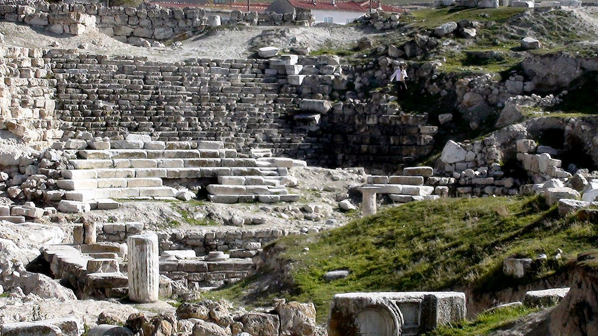
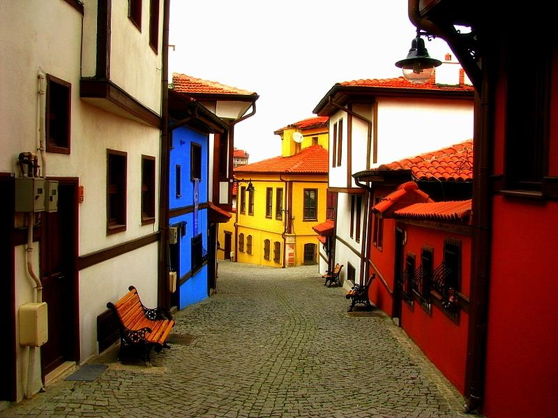
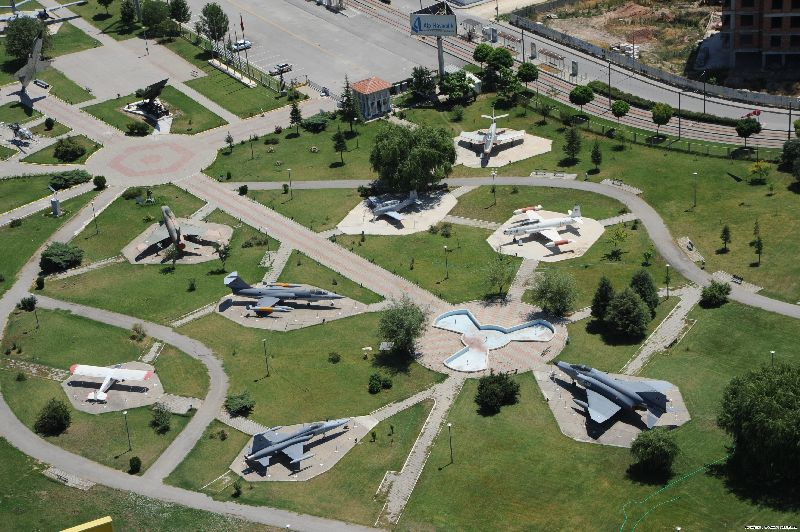
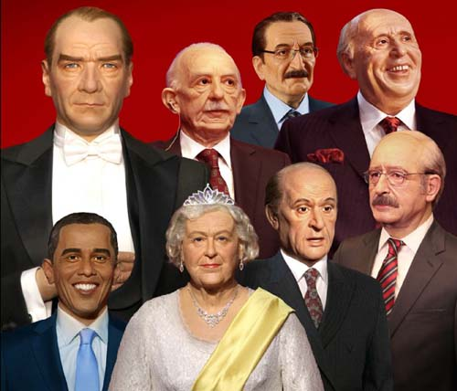

Home |
Local Dishes |
Historical Places |
Useful Links |
About Me |
Contact Me |
Registration |
WELCOME TO ESKİŞEHİR
| Home |
Local Dishes |
Historical Places |
Useful Links |
About Me |
Contact Me |
Registration |
Pessinus the Ancient City
Pessinus was an Ancient city and archbishopric in Asia Minor, a geographical area roughly covering modern Anatolia (Asian Turkey) on the upper course of the river Sangarios (Sakarya River), remaining a Catholic (formerly double) titular see.
Map of Pessinus by Charles Texier (1834). Hypothetic map of the ruins at Pessinus by the French explorer Charles Texier (1834). Pessinus, the present modern Turkish village of Ballıhisar, is centred 13 km from Sivrihisar a small town on the Ankara-Eskişehir road at the junction with the Afyon-İzmir road, 120 km southwest of Ankara. The village is on the high Anatolian plateau at 950 m above sea level. Its clustered centre is in a tributary valley of the Sakarya.
According to ancient tradition, Pessinous was the principal cult centre of the cult of Cybele/Kybele. The Graeco-Phrygian Cybele is rooted in the old Anatolian goddess Kubaba, whose cult spread over Anatolia during the second millennium BC. Tradition situates the cult of Cybele in the early Phrygian period (8th century BC) and associates the erection of her first "costly" temple and even the founding of the city with king Midas (738-696 BC?). However, the Phrygian past of Pessinus is still obscure, both historically as archaeologically. For example, the geographer Strabo (12.5.3) writes that the priests were potentates in "ancient times", but it is unclear whether Pessinus was already a temple state ruled by "dynastai" in the Phrygian period. According to Cicero (Har. Resp. 8.28) the Seleucid kings held deep devotion for the shrine, which indicates the sanctuary was still much revered in this period.
Odunpazarı Houses
“Odunpazari Historical Urban Site” is a significant example to cities established totally by the Turks within Anatolia. It’s an urban workshop with the best preserved examples of traditional Turkish architecture and an open-air museum where the structure of the traditional Turkish neighborhood with its entire pattern is maintained.
Architectural style of Odunpazari houses, which is developed peculiar to the local geographical circumstances, also carries the characteristics of traditional Turkish housing architecture. Not only individual structures but also harmony of the houses with each other and with their surroundings is a remarkable aspect within the site. Alongside with the architectural characteristics of a certain period observed in Odunpazari, social and cultural values of the period are represented in the side. In addition, materials, techniques and workmanship used in Odunpazari houses are the components of a technology which is not used today.
Besides territorial, geographical and climatic variables, the area is an important example of how the texture of a city is formed with religious life and traditions. The urban texture of the “Odunpazari Historical Urban Site” developed around the “Kursunlu Mosque Complex” is an architectural landscape that has been home for Mevlevism for four centuries. With the mosque at the center, the hanikâh (inn of dervishes) at southeast, semahane (whirling –a kind of Mevlevi ritual- area) at south, the hospice and imaret at southwest, the soup kitchen at west, the caravanserai at northwest and Ottoman elementary-primary school at east, Kursunlu Mosque Complex has been one of the leading training complexes of its period.
What brings the Complex from an individual ensemble to spatial importance beyond being a mere educational complex is its success in shaping Odunpazari Area in line with the traditions and patterns of Mevlevism. Many tombs -not only those whose locations are known but also those survived through oral history and whose location are not known- are scattered around by taking the Complex in the center.
Aviation Museum
Eskişehir Aviation Museum, also known as Eskişehir Aviation Park, (Turkish: Havacılık Müzesi or Havacılık Parkı) is an open-air museum in Eskişehir, Turkey for civil and military aviation. Established in 1997, it is operated by Anadolu University.
The Governorship of Eskişehir Province and the Turkish Air Force 1st Tactical Air Force Command, which is stationed in Eskişehir, came together for the establishment of an aviation museum. Eleven abandoned or retired fighter, reconnaissance and cargo aircraft were donated to the museum. The interior of a C-47 cargo aircraft was arranged as a cafeteria.[3] The open-air museum was inaugurated on December 16, 1997, and initially operated by a foundation. On May 28, 1999, the museum building was opened. After closing of the foundation, the museum was left to the Turkish Air Force on February 1, 2006. Anadolu University took over the facility from the Turkish Air Force on September 22, 2011. Following maintenance and restoration works, it was reopened in September 2012 in the status of an "Aviation Park".[1]
Wax Museum
Yılmaz Büyükerşen Wax Museum, also known as Eskişehir Wax Museum, (Turkish: Yılmaz Büyükerşen Balmumu Heykeller Müzesi) is a wax museum in Odunpazarı second level municipality in Greater Eskişehir, Turkey.
The museum is situated on Atatürk Boulevard at 39°45′54″N 30°31′19″E. It was established on 19 May 2013 by Yılmaz Büyükerşen, sculptor and the mayor of Eskişehir Metropolitan Municipality. The museum revenues are to be used in the education of female students and in general students with disabilities.
Namesplate of the museum at entrance. There are 198 wax sculptures exhibited in five halls in the museum. The halls are;
Hall A: Atatürk (founder of Turkey) and his family, Turkish War of Independence, some of the Ottoman sultans
Hall B: Aviation, railroads, press, industry, science, sports, foreign leaders, Turkish actors and other artists
Hall C: Historical characters
Hall D: Democracy (in this hall taking photography is not permitted)
Hall E: Yılmaz Büyükerşen's personal exhibition
Some of the characters depicted are,:[3][4] Mehmet II (1432–1481), Selim I (1470/1-1520), Süleyman I (1494–1566), Hürrem Sultan (1502/04-1558), Cengiz Topel (1934–1964), Sabiha Gökçen (1913–2001), Cüneyt Arkın (born 1937), Orhan Gencebay (born 1944), Hulusi Kentmen (1912–1993), Barış Manço (1943–1999), Kemal Sunal (1944–2000), Yunus Emre (1238–1320), Battal Gazi (690/5-740), Nasrettin Hoca (13th century), İlber Ortaylı (born 1947), Hıfzı Topuz (born 1923), Ataol Behramoğlu (born 1942), Emin Çölaşan (born 1942), Beyazıt Öztürk (born 1969), İlyas Salman (born 1949), Adile Naşit (1930–1987), Adnan Menderes (1899–1961), Turgut Özal (1927–1993).